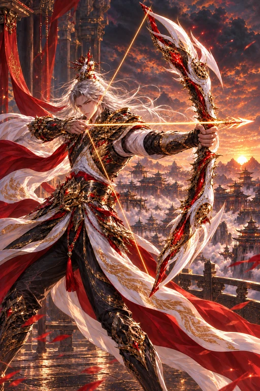

PROJECT V
SSS
주작의 가호
이름 미정 · 전투 리소스 시연
VERMILION / 01
전체 시연
주작의 깃을 펼치는 중
전투 리소스 준비 중
0.00 / 5.40초
재생
처음부터
타격 순간
중단
속도
0.25×
0.5×
1×
2×
무음 검수
용병 확대
아우라
동작만
동작 줄이기
01 / AURA
주작의 가호
주작의 날개 · 상시 아우라
02 / DASH
적영보
깃털 잔영 · 이동
03 / SHOT
금우 관통
시위 충전 · 관통 사격
04 / SKILL
주작비상
주작 현신 · 연속 관통
05 / ULTIMATE
주작천강
천공 화살진 · 주작 강림
06 / HIT
피격
충격 흡수 · 회복
07 / DEFEAT
쓰러짐
무릎 · 정착

SSS
승인 원화 보존
SEQUENCE
주작이 감싸는 적금의 궁사
검수 상황
정상 재생
시전 중단
대상 소멸
주작의 가호
적영보
금우 관통
주작비상
주작천강
피격
쓰러짐
리소스 색인 ↗